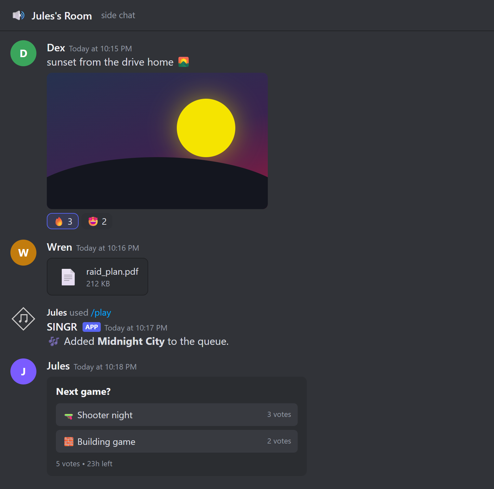
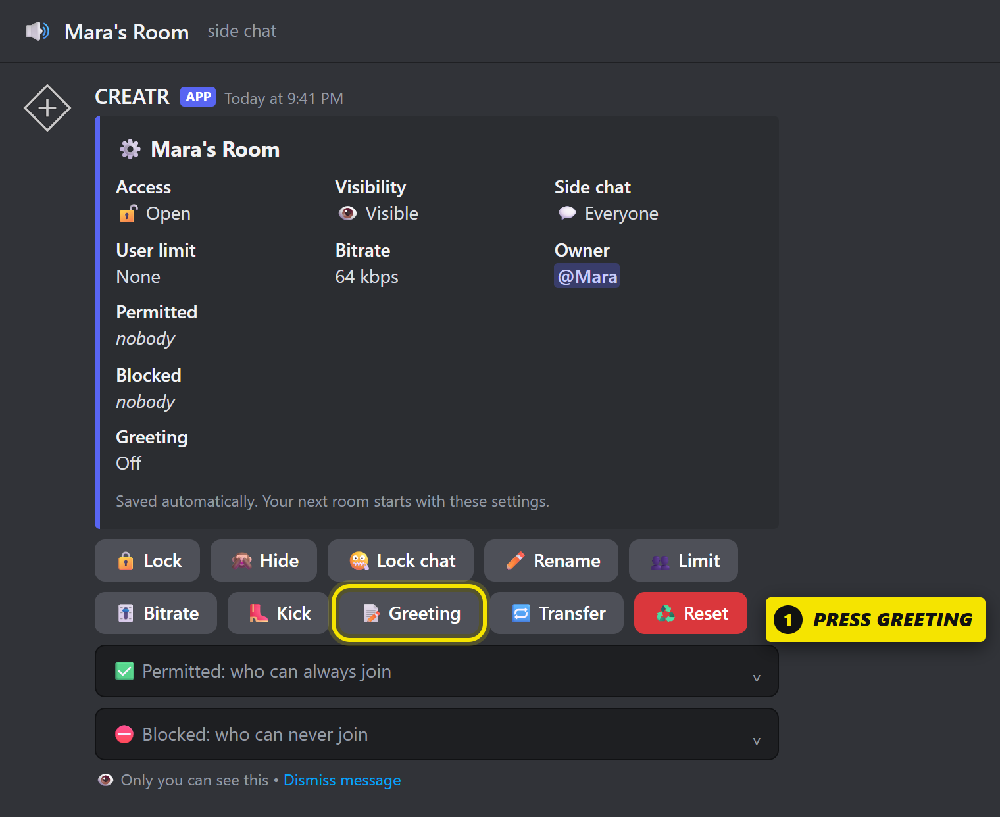
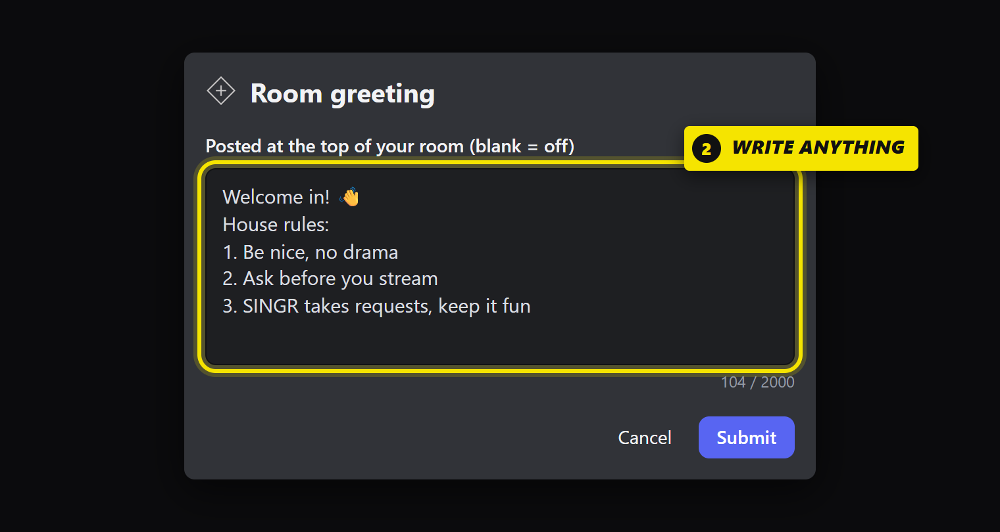
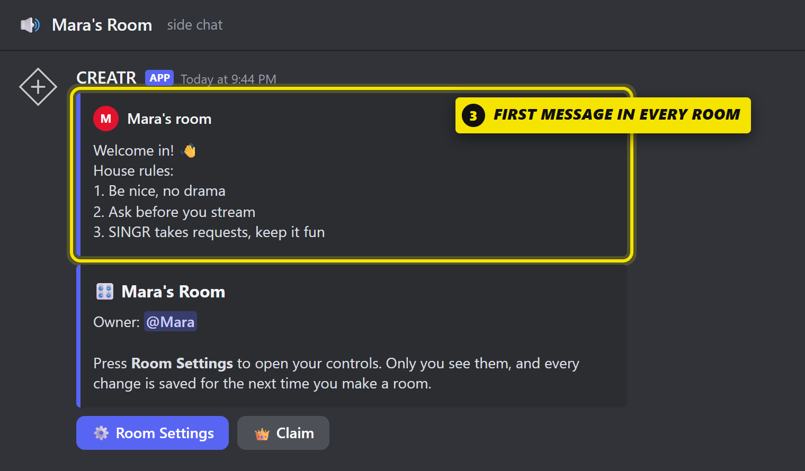
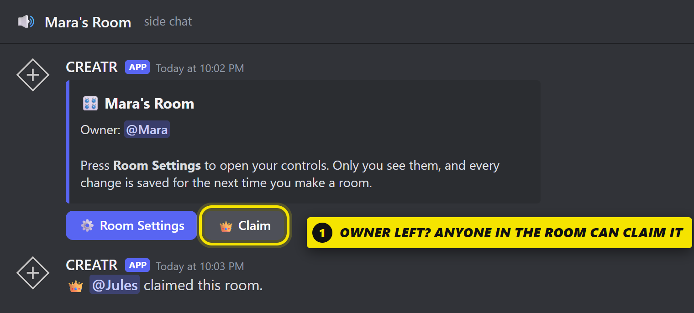
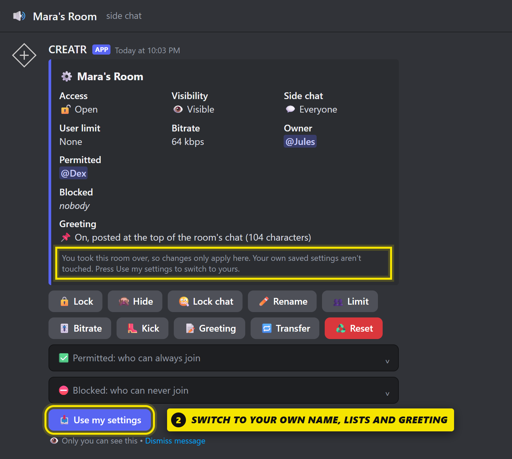

CREATR, the bot that gives everyone their own voice room, just got three updates: rooms you can fully use, a greeting you can put at the top of your room, and claiming a room no longer messes with your own settings. Here's how each one works. New to CREATR? Start with How to use CREATR.
Rooms work fully now
Everyone who can get into a room can now use all of it. In the room's chat you can post pictures and files, react, use emoji, stickers and polls, send voice messages, and use slash commands, like asking SINGR for a song. In voice you can talk, stream, start activities and use the soundboard. No setup needed: every new room starts this way.

Your room controls still work on top of this. 🔒 Lock still decides who can join, and 🤐 Lock chat still means only you and the people you permit can type.
Add a greeting to your room
Put a message at the top of every room you make: house rules, a welcome, a link, anything you like.
- Open your room's controls (press ⚙️ Room Settings in the room's chat, or type
/room) and press 📝 Greeting. - Write your greeting, up to 2,000 characters, and press Submit.
- It's posted as a card, the first message in your room. Every room you make from now on starts with it.



To change it, press 📝 Greeting again: the card in your room updates straight away. Clear the box and submit to turn the greeting off. ♻️ Reset puts your other settings back to normal but keeps your greeting.
Taking over a room is safe now
If a room's owner leaves, anyone still in it can take it over. Before this update, changing anything in a room you'd taken over could copy the old owner's name and lists into your own saved settings, so your next room came out looking like theirs. That can't happen anymore.
- Owner gone? Press 👑 Claim on the room's card. You need to be in the room.
- Change whatever you like. It only applies to this room, and your own saved settings stay exactly as they were. Want the room to be yours properly? Press 📥 Use my settings and it switches to your own name, lists and greeting, then saves like a room you made.


The same goes for a room someone hands you with 🔁 Transfer.
Rooms are fully usable from the start. 📝 Greeting puts your own message at the top of every room you make. Taking over a room never touches your own settings, and 📥 Use my settings makes it yours.
The screenshots are recreations of CREATR's panels, with made-up names.